Informe técnico completo · Estado al 14 de noviembre de 2026
NOVA
La salud de la tripulación, entera dentro de la nave, con el software de vuelo de la NASA como núcleo.
Desafío
Create Health Monitoring Software for Astronauts on Space Missions
Equipo
Nicolás Moreno · Benjamín Campos · Nicolás Richardson · Luis González · Ambar Martínez · Daniella Mora
Núcleo
F Prime v4.4.2 · NASA JPL · Apache 2.0, el marco que voló el helicóptero Ingenuity
Concepto del Equipo B&N para el NASA International Space Apps Challenge. No está afiliado a la NASA ni cuenta con su respaldo. Tripulación ficticia en todo el documento.
NOVA · Informe técnico completo01 / 40
Resumen ejecutivo
Un médico de a bordo que no espera a la Tierra.
En un viaje a Marte, una consulta con el cirujano de vuelo tarda entre 6 y 44 minutos ida y vuelta, y durante la conjunción solar el enlace se corta por semanas. NOVA hace el monitoreo, la detección y la primera respuesta dentro de la nave. Los signos pasan por un núcleo construido con F Prime; la tripulación los ve en la pantalla, en su teléfono y sobre el cuerpo del paciente en realidad aumentada; un asistente local responde con fuentes médicas abiertas. La Tierra recibe un informe cada noche y devuelve mejoras firmadas.
4
componentes propios en F Prime v4.4.2
5
modelos locales: lenguaje, búsqueda, voz, oído y visión
35.830
pasajes de 41 fuentes médicas de licencia abierta
12
protocolos de emergencia con su fuente
10
protocolos guiados sobre el cuerpo en realidad aumentada
~13 ms
visión del cuerpo por cuadro, en la GPU de la nave
3,8 GB
todos los modelos de a bordo, en disco
0
llamadas a internet en la arquitectura de vuelo
Tres principios
01 · Todo a bordo
Ninguna función crítica depende de la nube ni de la Tierra. Los modelos, la biblioteca, la voz y la visión corren en el mismo computador de la nave.
02 · Reglas fijas
Los umbrales viven en el núcleo de vuelo y los pasos de emergencia salen de un archivo revisable. El modelo explica y acompaña; no decide.
03 · La persona decide
Cada tripulante elige qué comparte. El ánimo sale del teléfono solo si comparte su día; lo que escribe nunca sale.
Qué cambió desde el informe del 9 de noviembre
Escáner del cuerpo en RA. La anatomía se calza en 3D sobre el paciente y se anima con sus signos en vivo.
Visión de a bordo. El teléfono manda cuadros a la nave, que corre la visión pesada en su GPU.
Procedimientos sobre el cuerpo. Un instructor que confirma, corrige y registra cada paso.
RCP según la gravedad. Técnica de microgravedad, Marte o Tierra, con conteo y deriva.
Control desde la estación. Con el teléfono dentro del visor, todo se maneja desde el PC.
Cerebro intercambiable. A bordo por defecto; la demo con un modelo externo se declara en pantalla.
Gemelo, Mind y kit 3D. Anatomía real, salud mental y el botiquín como grafo de objetos.
La nave se levanta sola. Núcleo, simulador, modelos, voz, oído y visión, vigilados.
NOVA · Informe técnico completo02 / 40
Contenido
Cinco partes, de la nave al teléfono
PRESENTACIÓN
04La pila tecnológica completa
05Modelos de IA a bordo
I · ARQUITECTURA
06Vista general
07El recorrido de un dato
08Núcleo de vuelo F Prime
09F Prime en detalle
10Estación médica y simulador
11Servicios de la nave
12El enlace: API completa
II · LA PANTALLA DE LA NAVE
13NOVA PC
14Vitals y pronóstico de signos
15Body twin, el gemelo anatómico
16Mind, la salud mental
17Ask NOVA y cerebro intercambiable
18Biblioteca médica
19Kit médico 3D
20Misión, Casa y sistemas
III · EMERGENCIAS Y REALIDAD AUMENTADA
21Emergencias: 12 protocolos
22Visión a bordo
23Escáner del cuerpo
24Holograma por sistemas
25RCP según la gravedad
26Procedimientos sobre el cuerpo
27Control desde la estación
IV · TELÉFONO Y TIERRA
28App móvil en modo misión
29Emergencia, Casa y escáner en el teléfono
30Salud de las mujeres y ejercicio
31Consola de Tierra
32Ciclo nave ↔ Tierra firmado
V · RIGOR Y ESTADO
33Material de la NASA y fuentes abiertas
34Licencias y créditos
35Seguridad clínica y privacidad
36Cómo lo verificamos
37Estado por pieza
38Pendientes, riesgos y plan
39Anexo: levantar todo y glosario
Equipo B&N
Nicolás MorenoIngeniero de software · diseño de producto. Construye NOVA PC, el núcleo y la app.
Benjamín CamposIngeniero físico · ciencia de datos y modelos agénticos.
Nicolás RichardsonIngeniero físico · ciencia de datos y visión artificial.
Luis GonzálezIngeniero físico · hardware y robótica. Arma la estación médica.
Ambar MartínezPsicóloga clínica y educacional · neuropsicología. Bienestar y sesión privada.
Daniella MoraCandidata a doctora en Física (UC) · física de partículas, con experiencia en el CERN.
NOVA · Informe técnico completo03 / 40
Presentación · La pila tecnológica
Todo lo que corre en la nave, por capa
Software abierto de punta a punta, elegido para correr sin conexión en un solo computador. Cada pieza tiene su licencia verificada (página 34). Las versiones son las que están instaladas hoy.
Núcleo de vueloSignos, reglas, alertas y comandos
F Prime 4.4.2NASA JPL · marco de vuelo
C++4 componentes propios
CMakefprime-util build
Python 3.12GDS de F Prime
Enlace y escritorioLa pantalla y la API de la nave
Rust 1.99Enlace, servicios, firmas
Tauri 2Ventana nativa
ax
axum 0.8 · tokioHTTP, SSE y WebSocket
rustls · rcgenHTTPS propio :8751
ed25519-dalek 2Paquetes firmados
IA a bordoLenguaje, búsqueda, voz, oído, visión
ll
llama.cpp b12110Qwen3 4B · nomic embed
wh
whisper.cpplarge-v3-turbo
ONNX RuntimeVoz Kokoro-82M
MediaPipe 1.2.3Pose heavy + Hands, GPU
Hugging FaceOrigen de los pesos
Interfaz y 3DLo que ve la tripulación
JavaScriptMódulos ES, sin framework
three.jsGemelo, kit y holograma
WebGLShaders propios
pdf.js 5.4.296Lector de la biblioteca
WebAssemblyJPEG 2000 escaneado
TeléfonoCada tripulante, su app
Expo 57Builds y OTA
React Native 0.86React 19.2
AndroidWidget «Casa»
HerramientasDatos, pruebas y entorno
Node.js 24Scripts y pruebas
PuppeteerPruebas de punta a punta
uvEntornos de Python
Git · GitHubRepositorio privado
HardwareHoy y en vuelo
Apple M5 ProDesarrollo, GPU Metal
Clase JetsonObjetivo de vuelo · siguiente
Estación médicaUSB serie o UDP · Luis
≈ 14.000líneas propias en la nave (Rust, C++, JS, Python), sin contar la app
38commits en el repositorio de la nave desde el 5 de noviembre
7servicios locales que la nave abre y vigila sola
0servicios en la nube en la arquitectura de vuelo
Logos de Simple Icons (CC0) e íconos de Lucide (ISC); las marcas pertenecen a sus dueños. F Prime: logo del proyecto abierto de NASA JPL (Apache 2.0).
NOVA · Informe técnico completo04 / 40
Presentación · Inteligencia a bordo
Cinco modelos que caben en el computador de la nave
Cada modelo corre en su propio servicio, solo en 127.0.0.1; la nave lo abre y lo vigila. Si uno falta, sigue sin él y lo dice. Memoria medida con todo corriendo, el 14 de noviembre.
Función
Modelo
Motor · puerto
Disco
Licencia
Lenguaje
Qwen3-4B-Instruct-2507 · Q4_K_M · contexto 16.384, 2 turnos en paralelo, caché de prefijo
Kokoro-82M v1.0 · voz af_heart (inglés), ef_dora (español)
ONNX Runtime · Python 3.12 · :8082
337 MB
Apache 2.0
Visión
MediaPipe Pose Landmarker heavy (puntos 3D y máscara) + Hand Landmarker
MediaPipe 1.2.3 · GPU · :8792 tras /v1/vision/ws
38,5 MB
Apache 2.0
Memoria en uso, medida
Memoria residente de cada proceso. Total cercano a 4,1 GB: cabe en un computador de vuelo de 8 GB con margen.
Rápido donde importa
Reglas y protocolos van primero en el prompt: con la caché de prefijo NOVA empieza a responder en cerca de 1,5 s. La visión tarda unos 13 ms por cuadro.
Lo que los modelos no hacen
No deciden pasos médicos ni umbrales. Las emergencias responden con texto fijo: el modelo llegó a negar un paro reportado porque el sensor no lo mostraba.
Demo opcional, declarada
Para la demo el cerebro puede ser Claude; la pantalla dice «demo brain · Claude» y vuelve sola al modelo de a bordo. Queda fuera de la arquitectura de vuelo.
NOVA · Informe técnico completo05 / 40
06 · Parte I · Arquitectura · Vista general
Todo vive dentro de la nave
El borde punteado turquesa es el casco: todo lo que está adentro funciona sin la Tierra. Lo único que cruza es un enlace lento, con el retraso de la luz, que baja un informe y sube paquetes firmados.
NOVA · Informe técnico completo06 / 40
07 · Parte I · Arquitectura · El recorrido de un dato
De la estación a la pantalla en menos de un segundo
Un caso real de la demo: el simulador aplica el escenario «desmayo» y el pulso de Ingrid cae a 34 latidos por minuto. Así pasa ese valor por cada pieza, de arriba hacia abajo en el tiempo.
Lectura · 1 Hz. Un mensaje por medición con tripulante, sensor, valor, unidad y calidad de 0 a 1. Máximo 1 KB.
Clasificación. Rango plausible por sensor; una calidad bajo 0,5 no alerta. Subir de nivel es inmediato; bajar exige 10 s seguidos.
Silencio · 120 s. Si un sensor que ya reportó deja de hablar, el núcleo emite SIN_DATOS.
Estado · 1 Hz. 4 tripulantes × 18 sensores con valor, nivel y edad; cada alerta sale al instante.
Pantallas. NOVA PC recibe el flujo continuo; los teléfonos leen /v1/estado cada 5 s.
Tierra. El informe baja con el retraso de la luz; los comandos suben por una cola con su hora de llegada calculada.
< 1 sdel sensor a la pantalla
10 sseguidos para bajar de nivel
120 sde silencio y el núcleo avisa
9,9 minhasta la Tierra, hoy (día 220)
NOVA · Informe técnico completo07 / 40
08 · Parte I · Arquitectura · Núcleo de vuelo
F Prime, el software que hizo volar a Ingenuity
F Prime es el marco de software de vuelo del JPL, abierto con licencia Apache 2.0. NOVA lo trae como submódulo en vuelo/lib/fprime y agrega su propio despliegue, Nova/Nave: los subsistemas estándar más cuatro componentes propios, unidos por puertos tipados.
Componente
Qué hace
Entradas y salidas
Estacion
Lee la estación médica en cada ciclo sin bloquear y descarta JSON inválido con el evento MENSAJE_INVALIDO.
UDP 50050 a Nova.Signo
MonitorSalud
Clasifica cada lectura contra el umbral de atención y el de aviso a la Tierra. Avisa si un sensor calla 120 s.
31 parámetros en prmDb · WARNING_HI/LO
Pantalla
Publica el estado completo de la tripulación a 1 Hz y cada alerta al instante.
UDP 50051 · 50052
Salud
Tipos compartidos: sensores, niveles y el signo vital como estructura.
FPP
Ritmo
1 Hz para leer y clasificar; 0,5 y 0,25 Hz para los recursos y la salud del propio sistema.
Desde la Tierra
Los umbrales cambian por comando del diccionario, se guardan en prmDb y sobreviven a un reinicio.
Vista Systems
fprime-gds con la interfaz de NOVA: eventos, telemetría y comandos traducidos con los diccionarios del despliegue.
v4.4.2F Prime, submódulo en vuelo/lib
31parámetros de vuelo por comando
3rate groups: 1, 0,5 y 0,25 Hz
Apache 2.0licencia abierta del JPL
NOVA · Informe técnico completo08 / 40
09 · Parte I · Arquitectura · F Prime en detalle
Dos umbrales por lado y una regla para no alarmar de más
El monitor de salud compara cada lectura con dos límites: el de atención, que resuelve la tripulación, y el de aviso a Tierra, que pide al cirujano de vuelo. Los 31 límites son parámetros de F Prime: viven en prmDb, cambian por comando y la pantalla los dibuja tal como están en el núcleo.
Indicador
Rango físico
Atención
Aviso Tierra
Base del valor de partida
Pulsolpm
20–250
≥110 · ≤45
≥140 · ≤35
taquicardia >100, bradicardia <50
SpO2%
50–100
≤94
≤90
hipoxemia bajo 90 %
SistólicammHg
50–250
≥140 · ≤90
≥180 · ≤80
ACC/AHA 2017; hipotensión <90
DiastólicammHg
30–150
≥90
≥120
ACC/AHA 2017
Temperatura°C
30–43
≥38,0 · ≤35,5
≥39,5 · ≤35,0
fiebre ≥38; hipotermia <35
Respiraciónrpm
4–60
≥24 · ≤10
≥30 · ≤8
alerta temprana clínica
Glucosamg/dL
20–600
≤70 · ≥180
≤54 · ≥250
ADA: hipoglucemia nivel 1 y 2
CO2 cabinappm
0–10.000
≥2.600
≥5.000
NASA-STD-3001 vol. 2
Sueñoh
0–16
≤5,9
≤3,5
regla prudente: menos de 6 h
Ánimo · energía1–5
1–5
≤2
nunca
solo si la persona comparte su día
Valores de partida (docs/umbrales.md), todos «pendiente» hasta que un médico los valide. VFC, pulso en reposo, pasos, luz, ruido, O2 y temperatura de cabina no tienen umbral fijo: se compararán con la línea base de cada persona.
Estacion
Componente pasivo a 1 Hz. Lee hasta 256 mensajes por ciclo sin bloquear, comprueba unidad y rango, y avisa PERDIDA si la estación calla 15 s.
MonitorSalud
Componente activo con cola. Una lectura con calidad bajo 0,5 se guarda sin alertar; un valor imposible se descarta como error del sensor, no como emergencia.
Pantalla
Puente con NOVA PC: manda el estado completo y cada alerta por UDP 50051 y recibe lo que la tripulación ingresa a mano por 50052.
4eventos de salud: ALERTA_TIERRA, ALERTA_ATENCION, VUELVE_NORMAL, SIN_DATOS
0,5calidad mínima para alertar
120 ssin datos y avisa (parámetro)
10avisos máx. por valor imposible
NOVA · Informe técnico completo09 / 40
10 · Parte I · Arquitectura · Estación médica
Un contrato de datos para conectar cualquier hardware
La estación médica le habla al núcleo con un contrato abierto: una línea JSON por medición (NDJSON). Si el mensaje cumple el contrato, el núcleo lo entiende, sin saber qué placa hay detrás. La estación de Luis, el simulador y los teléfonos entran por la misma puerta.
Transporte
UDP al puerto 50050, un mensaje por datagrama, máximo 1 KB, UTF-8 terminado en salto de línea. El contrato propone además USB serie a 115.200 baudios para no depender de la red; el componente Estacion hoy solo lee UDP. Los teléfonos entran por /v1/lote.
La unidad se comprueba contra la tabla del contrato; si no coincide, el mensaje se descarta con su motivo.
Tipo
Para qué
Qué hace el núcleo hoy
medicion
signos vitales, cabina y los 7 sensores del teléfono
en uso valida y clasifica
latido
la estación sigue viva, cada 5 s
en uso 15 s sin señal = PERDIDA
onda
trozos de ECG o PPG numerados
parcial señal de vida
evento
sin_contacto, movimiento, error_sensor…
parcial señal de vida
El simulador: variabilidad real y cinco escenarios
Mientras no está la estación física, estacion/simulador/simulador.py manda mensajes con el mismo contrato. El pulso, la SpO2 y la respiración siguen segundo a segundo la variabilidad de cuatro registros del BIDMC PPG and Respiration Dataset (PhysioNet, ODC-By 1.0), uno por tripulante, montada sobre su línea base. Manda pulso y SpO2 cada 1 s, respiración cada 2 s, VFC y temperatura cada 10 s, presión cada 15 s y glucosa cada 30 s. Los escenarios se piden en la terminal o por UDP 50053.
Escenario
Qué cambia
Tiempo
desmayo T3
pulso −26 (Ingrid a 34 lpm), presión −48/−34
cae en 20 s, vuelve a los 3 min
hipoglucemia T1
glucosa −46 mg/dL, pulso +38, VFC −25 ms
rampa de 120 s
fiebre T2
temperatura +2,0 °C, pulso +22, respiración +5
rampa de 150 s
hipoxia T4
SpO2 −11 %, pulso +30, respiración +10
rampa de 60 s
co2 · normal
CO2 de cabina +1.500 ppm · todo a la línea base
inmediato
sembrar_diarios.py deja dos semanas de sueño, ánimo y energía para la vista Mind. La estación física de Luis espera placa y sensores; con NOVA_SIN_SIMULADOR=1 la nave no abre el simulador.
NOVA · Informe técnico completo10 / 40
11 · Parte I · Arquitectura · Servicios de la nave
Un solo programa abre y vigila todo lo demás
NOVA PC (Tauri, con su enlace en Rust) es lo único que hay que abrir. Desde que arranca, con ventana o sin ella, levanta los siete servicios de a bordo, los vigila cada 3 segundos y vuelve a abrir el que se cae. Lo que ya está corriendo no se duplica y cada servicio deja su registro en ~/.nova-pc/logs/.
Servicio
Puerto
Programa
Registro
Núcleo de vuelo
TCP 5080
fprime-gds: abre Nova_Nave y da la API de Systems
nucleo.log
Modelo de lenguaje
TCP 8081
llama-server: Qwen3 4B Q4_K_M, 16k de contexto, en GPU
modelo.log
Voz
TCP 8082
voz/servidor.py con Kokoro-82M
voz.log
Oído
TCP 8083
whisper-server: large-v3-turbo q5_0
oido.log
Búsqueda
TCP 8084
llama-server --embedding: nomic-embed v2
busqueda.log
Visión
TCP 8792
vision/servidor.py: MediaPipe Pose y Hands
vision.log
Simulador
UDP 50053
simulador.py (no con NOVA_SIN_SIMULADOR=1)
simulador.log
El enlace: dos puertas y una sola API
HTTP :8750
Pantallas, teléfonos y consola de Tierra. Sirve la interfaz y la API; cada respuesta va con no-cache, así la pantalla carga siempre la versión nueva.
HTTPS :8751
La misma app con certificado propio (rcgen + rustls), porque el navegador solo da la cámara a páginas seguras. Incluye las IP de hoy y se rehace si cambian.
Token opcional
Con NOVA_TOKEN, las 8 rutas que escriben desde fuera (teléfonos, visores, Tierra, Casa) exigen la cabecera x-nova-token.
Variable
Qué cambia
--sin-ventana
solo el enlace: otro monitor, un análogo o pruebas
NOVA_SIN_SERVICIOS=1
cada pieza se levanta a mano (anexo)
NOVA_PUERTO_ENLACE
una nave de prueba en otro puerto
NOVA_MODELO · _OIDO · _VOZ …
un servicio en otro computador
NOVA · Informe técnico completo11 / 40
12 · Parte I · Arquitectura · API de la nave
Treinta y nueve rutas para pantallas, teléfonos, visores y Tierra
Todas salen de tripulacion/src-tauri/src/main.rs y responden igual en :8750 y :8751. GET lee, POST escribe, WS es WebSocket. Las marcadas con exigen x-nova-token cuando la nave define NOVA_TOKEN.
Estado en vivo
GET
/v1/flujo
estado y alertas (SSE)
GET
/v1/estado
último estado completo
GET
/v1/mision
día y retraso de la luz
GET
/v1/salud
versión del enlace
Lo que entra al núcleo
POST
/v1/lote
lecturas del teléfono
POST
/v1/ingreso
medición a mano
POST
/v1/escenario
demo: escenario
Historia
GET
/v1/historia
serie de un signo
GET
/v1/resumen
24 h: media, mín., máx.
Preguntar a NOVA
POST
/v1/preguntar
respuesta en vivo (SSE)
GET
/v1/modelo
cerebro activo
POST
/v1/opinion
¿sirvió la respuesta?
POST
/v1/oir
voz a texto
POST
/v1/decir
texto a voz
Biblioteca médica
GET
/v1/biblioteca
las 41 fuentes
GET
/v1/biblioteca/buscar
pasajes por sentido
POST
/v1/biblioteca/recargar
releer el índice
GET
/v1/biblioteca/pdf/…
PDF original
Kit médico
GET
/v1/kit
inventario
POST
/v1/kit/buscar
pregunta al grafo
POST
/v1/kit/uso
registrar un uso
POST
/v1/kit/ajuste
corregir conteo
Emergencias y privacidad
G·P
/v1/bitacora
bitácora de a bordo
POST
/v1/privado
solo al cirujano
Escáner y visión
POST
/v1/escaner/cuadro
cuadro; vuelven órdenes
GET
/v1/escaner/flujo
último cuadro (SSE)
GET
/v1/escaner/visores
quién escanea
POST
/v1/escaner/orden
manejar un visor
WS
/v1/vision/ws
puente a la visión
Casa
GET
/v1/casa
bandeja
GET
/v1/casa/archivo/{id}
adjunto
POST
/v1/casa/respuesta
responder
POST
/v1/casa/subida
llega de la Tierra
POST
/v1/casa/bajada
baja a la Tierra
Sistemas y Tierra
GET
/v1/sistemas
eventos de F Prime
POST
/v1/sistemas/comando
comando con la luz
GET
/v1/tierra/informe
informe nocturno
GET
/v1/tierra/estado
la nave, con retraso
POST
/v1/tierra/actualizar
paquete firmado
GET
/v1/aprende
lo que llegó
Interfaz
GET
/ · /escaner.html
interfaz
39rutas /v1 más los PDF originales
8protegidas con token
3flujos SSE: estado, escáner, NOVA
6 MBtope por petición
NOVA · Informe técnico completo12 / 40
13 · La pantalla de la nave
Una pantalla para la tripulación, legible a dos metros
NOVA PC es la ventana de escritorio de la nave (Tauri) y la misma interfaz servida por el enlace en :8750. Recibe el estado del núcleo F Prime una vez por segundo por SSE y lo muestra en ocho vistas. La vista Crew es la de inicio: los cuatro tripulantes lado a lado, con NOVA a la derecha.
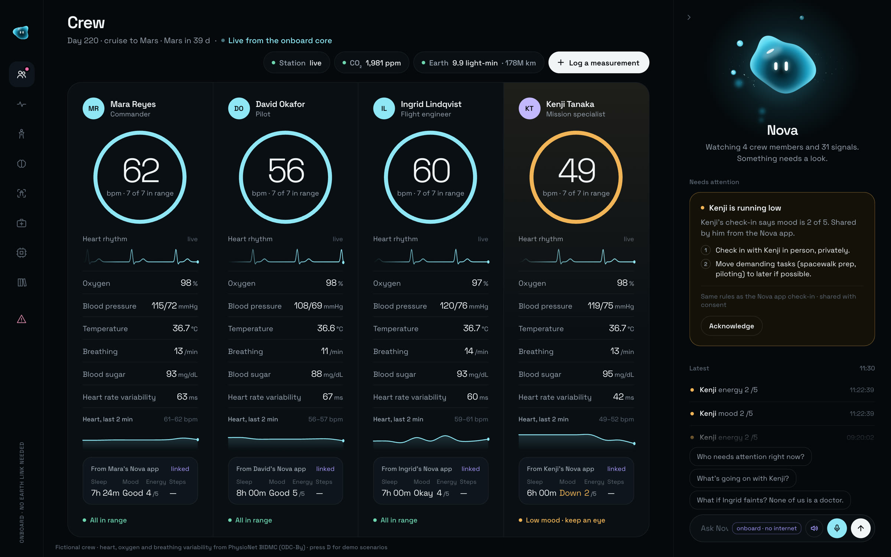
Vista Crew, 14 nov 2026, día 220 de misión. Anillo de pulso, ritmo y seis signos por tripulante. Kenji aparece en ámbar por un ánimo de 2/5 en su check-in.
Tarjetas de NOVA
Cada aviso sale de reglas fijas, no del modelo: qué cambió, qué hacer y la fuente. Pulso y presión bajos a la vez abren la guía de desmayo. Acknowledge lo calla 2 min si el nivel no sube.
Llena cualquier ventana
Diseñada para 1800×1000, escala.js la ajusta con un factor de 0,68 a 1,35: la letra crece con la ventana y la grilla reparte el resto. Sirve en un portátil o en la pantalla del módulo.
Voz y oído a bordo
Habla con Kokoro frase por frase; si falla, usa la voz del sistema, también sin red. Escucha con whisper.cpp: corta tras 0,9 s de silencio y no se oye a sí misma.
Vista
Qué muestra
Estado
Crew · Vitals · Body twin · Mind
En vivo · historia y pronóstico (14) · gemelo 3D (15) · estado mental (16)
en uso
Live body scan
El escáner en RA visto desde la nave, con control remoto del visor (parte III)
en uso
Medical kit · Systems · Library
Rack 3D (19) · núcleo F Prime (20) · biblioteca y lector (18)
en uso
NOVA · Informe técnico completo13 / 40
14 · Vitals y pronóstico
La historia de cada signo y lo que viene en los próximos 15 minutos
La vista Vitals dibuja la historia guardada a bordo (1 Hz por 6 h y por minuto por 30 días, en disco; ventanas de 10 min a 7 días) con los umbrales vigentes del núcleo encima, proyecta cada signo hacia adelante y avisa cuando algo se sale de lo esperado.
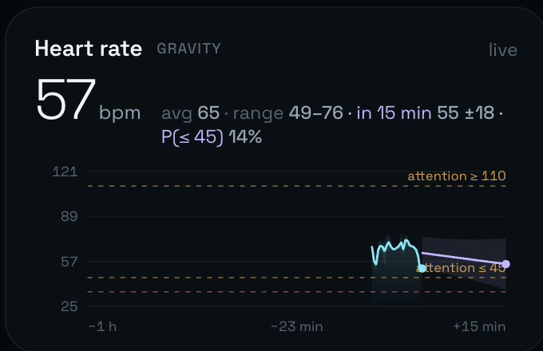
Pulso de Kenji, última hora. En lila, el cono a 15 min: 55 ±18 bpm, con 14 % de probabilidad de quedar en el umbral de atención (≤ 45).
Tendencia. Mínimos cuadrados ponderados sobre los últimos 30 min de esa persona, con más peso a lo reciente (constante de 15 min).
Cono. Se proyecta un cuarto de la ventana elegida, hasta 15 min. El ancho es ±2 desviaciones y crece con el horizonte.
Probabilidad de cruce. La chance de pasar el umbral de atención al final del horizonte. Sobre 30 % el cono se pinta ámbar.
Cambio inesperado. Si la última lectura cae a más de 3 desviaciones de lo que la tendencia esperaba, el panel lo marca como unexpected change.
Alcance honesto
Estadística simple y explicable sobre los datos de cada persona, en el espíritu de los modelos de mundo: predecir y actuar sobre la predicción. No es un modelo aprendido ni está validado clínicamente. Solo corre con lecturas de los últimos 30 s.
Cada signo, leído por la amenaza del vuelo que lo mueve
Amenaza (NASA HRP)
Qué mira NOVA
Cómo
Radiación espacial
Dosis acumulada de la misión
Tasas de MSL RAD: 1,84 mSv/día en crucero, 0,64 en Marte; límite 600 mSv
Aislamiento y confinamiento
Sueño, ánimo, energía, VFC
Check-ins compartidos y variabilidad del pulso
Distancia a la Tierra
Azúcar en sangre y retraso de la luz
Sin reabastecimiento ni evacuación
Campos de gravedad
Pulso y presión
Los fluidos suben y el corazón se adapta
Ambiente cerrado y hostil
SpO2, respiración, temperatura, CO2
El aire de la cabina llega al cuerpo
NOVA · Informe técnico completo14 / 40
15 · Body twin
Un gemelo anatómico en 3D que se colorea con los datos de hoy
Cada tripulante tiene un cuerpo de referencia que se gira, se acerca y se abre por capas. Diez regiones se pintan con su estado: en vivo desde el núcleo F Prime, o estimado por el modelo de a bordo con tasas publicadas por la NASA, y la ficha dice cuál de los dos es.
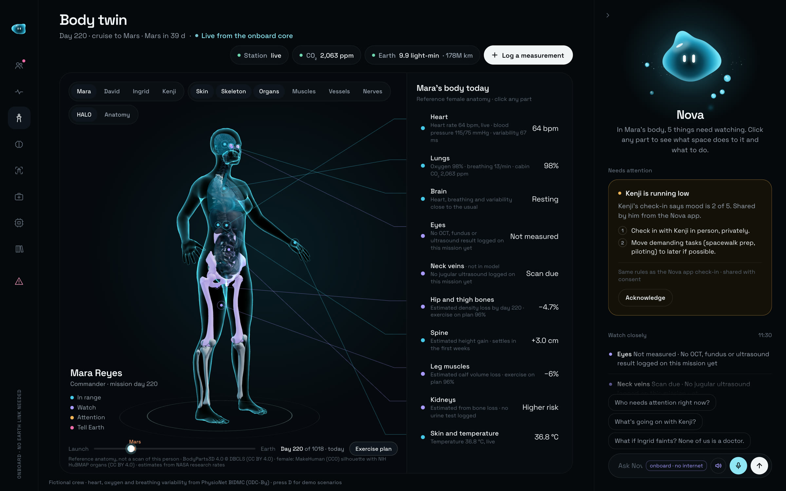
Gemelo de Mara, día 220. Piel, esqueleto y órganos encendidos; a la derecha las diez regiones con su valor de hoy. Son cuerpos de referencia, no un escáner de la persona.
Corazón, pulmones, cerebro, ojos, venas del cuello, cadera, columna, piernas, riñones y piel. Qué hace, qué le hace el espacio, cómo está hoy y qué hacer, con su fuente (NASA HRP, estudio de los gemelos, Marshall-Goebel 2019).
Proyección
Regla de a bordo
Fuente de la tasa
Hueso de la cadera
1,25 %/mes en ingravidez; el ejercicio cumplido la reduce hasta la mitad
NASA HRP: 1 a 1,5 %/mes sin contramedidas
Músculo de las piernas
Hasta 20 % en una curva de 120 días; el ejercicio quita hasta 65 %
NASA, hoja de atrofia muscular
Columna
Hasta +3 cm en los primeros días, y se queda
NASA HRP, riesgo de daño de disco
Gravedad de Marte
0,38 g cuenta como 40 % de un día en ingravidez
supuesto sin datos humanos todavía
NOVA · Informe técnico completo15 / 40
16 · Mind
Cómo está la cabeza de la tripulación, contado con cuidado
El aislamiento se nota primero en el sueño y el ánimo. La vista Mind junta dos fuentes: los signos en vivo de cada persona comparados con su propio promedio de 24 h, y el check-in diario que cada tripulante decide compartir desde su teléfono.
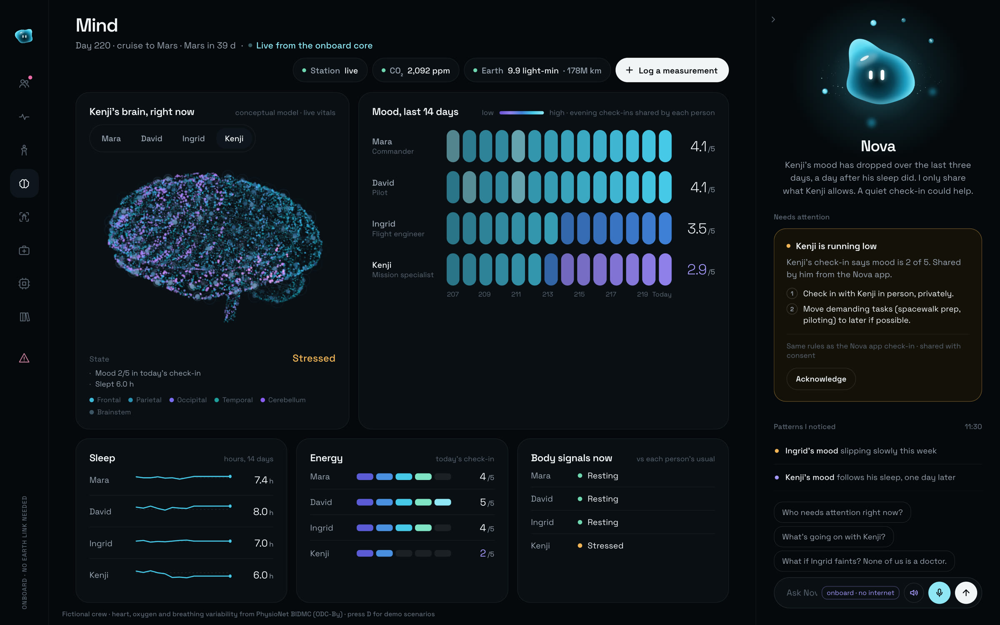
Kenji, día 220. El cerebro marca «Stressed» por un ánimo de 2/5 y 6,0 h de sueño. A la derecha, 14 días de ánimo de los cuatro; abajo, sueño, energía y señales del cuerpo frente a lo habitual de cada uno.
Seis estados con reglas fijas
Reposo, foco, estrés, fatiga, calma y alta activación. Primero los casos físicos: pulso −12 y presión −25 frente a lo habitual (poca sangre al cerebro), SpO2 bajo 92 %, azúcar bajo 70 o fiebre desde 38 °C. Después un puntaje con pulso, respiración y variabilidad, y al final el check-in: ánimo ≤ 2/5 o menos de 6 h de sueño. Cada estado muestra sus razones en palabras simples.
Privado por defecto
El ánimo, la energía y el sueño solo llegan a la nave si la persona comparte su día; lo que escribe en su diario nunca sale del teléfono. NOVA los nombra con cuidado y solo cuando importan (regla 6 de su prompt). En la Tierra, el cirujano de vuelo recibe resúmenes con consentimiento por /v1/privado.
Un modelo para explicar
El cerebro de partículas viene de OpenPsico (B&N, three.js r170, servido local) y sus perfiles de actividad son conceptuales: no están ajustados a EEG ni a resonancia. Sirve para que la tripulación entienda qué le pasa al cuerpo, no para medir la mente.
NOVA · Informe técnico completo16 / 40
17 · Ask NOVA
Un asistente que responde con los datos de la nave y cita sus fuentes
La tripulación le pregunta a NOVA por escrito o por voz. La nave arma la respuesta en /v1/preguntar: decide primero si es una emergencia, calcula las prioridades con reglas fijas y le pasa al modelo solo lo que necesita. El modelo redacta; no decide los pasos médicos.
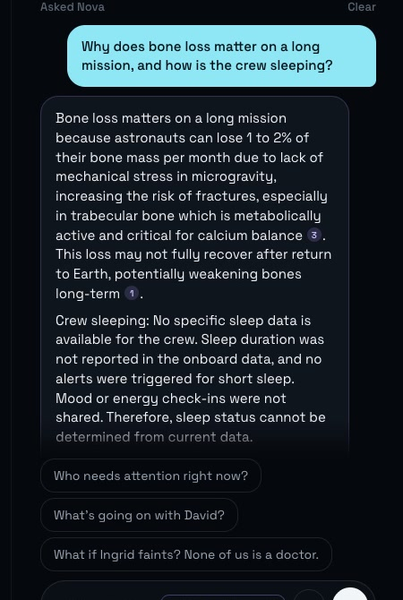
Respuesta con citas. Los números abren la página real en la biblioteca.
El cerebro se puede cambiar, y la pantalla siempre dice cuál es
Cerebro
Qué es
Cuándo se usa
Estado
A bordo por defecto
Qwen3 4B Instruct 2507 (Q4_K_M) en llama.cpp, :8081, con caché de prefijo: empieza a responder en ~1,5 s
Siempre. Es la arquitectura de vuelo: sin internet. La pantalla dice «onboard · no internet».
en uso
Demo
Claude Opus 5.5 por la API de Anthropic, esfuerzo bajo, con respaldo automático
Solo con NOVA_CEREBRO=claude y la clave en el entorno. La pantalla dice «demo brain · Claude»; si no responde, vuelve sola al modelo de a bordo.
opcional
Las emergencias nunca pasan por el modelo: en una prueba el modelo chico negó un paro cardiaco que la tripulación reportaba porque el sensor no lo mostraba. Desde entonces lo que reporta una persona manda y NOVA responde con el texto fijo del protocolo.
NOVA · Informe técnico completo17 / 40
18 · Biblioteca médica
41 fuentes abiertas y la página real de cada cita, sin internet
Todo lo que NOVA sabe de medicina sale de documentos guardados en la nave, con licencia verificada uno por uno. Se buscan por significado en inglés o español y cada resultado abre el PDF original en su página, con el pasaje marcado.
41fuentes en uso, de 42
35.830pasajes con fuente y página
768dimensiones, nomic-embed v2
3pasajes por pregunta
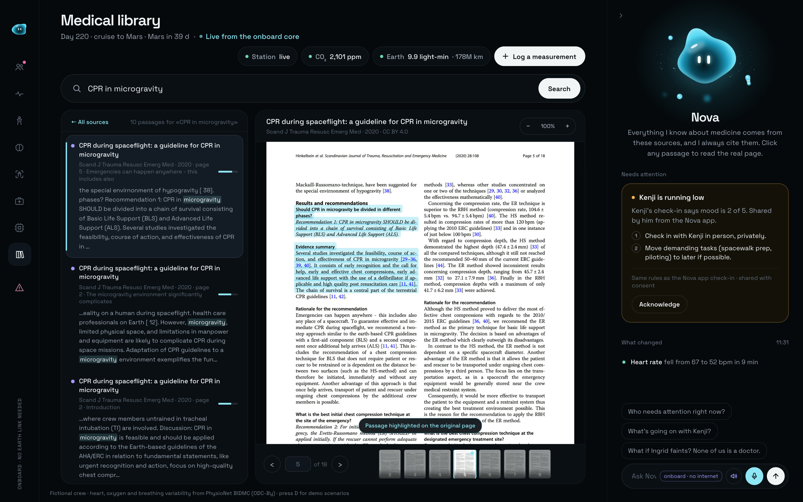
Búsqueda «CPR in microgravity». A la izquierda los pasajes; a la derecha la página 5 de la guía DGLRM/ESAM 2020 (Scand J Trauma Resusc Emerg Med, CC BY 4.0) con el pasaje resaltado. Fuera por licencia: StatPearls, WikEM, Harrison, Tintinalli, UpToDate.
Búsqueda híbrida
Significado (vectores) más un empujón por palabras clave. Índices, referencias y avisos legales repetidos no se citan.
Lector de la página
pdf.js 5.4 (Apache 2.0) local, con JPEG 2000 en wasm para escaneos. Marca el pasaje en la página real.
Índice incremental
indexar.py rehace solo lo que cambió (sha256). La nave recarga el índice sin reiniciar.
Origen
Fuentes
Ejemplos y licencia
NASA
26
HRP (13), OCHMO (10), checklist médico del transbordador, kit de la ISS · obra federal o NTRS
Basic Emergency Care, medicamentos esenciales, mhGAP, Doing What Matters (CC BY-NC-SA 3.0 IGO) · MedlinePlus
Artículos y trauma
5
RCP en microgravedad y tres sobre salud de las mujeres (CC BY 4.0) · TCCC 2026
NOVA · Informe técnico completo18 / 40
19 · Kit médico
El botiquín como un grafo de objetos que NOVA sabe recorrer
En Marte no hay reabastecimiento. El kit médico vive en la nave como un inventario en vivo: cada insumo con su cantidad, su cajón, su vencimiento y los protocolos que lo usan. NOVA lo lee antes de nombrar algo, así dice dónde está y cuántos quedan.
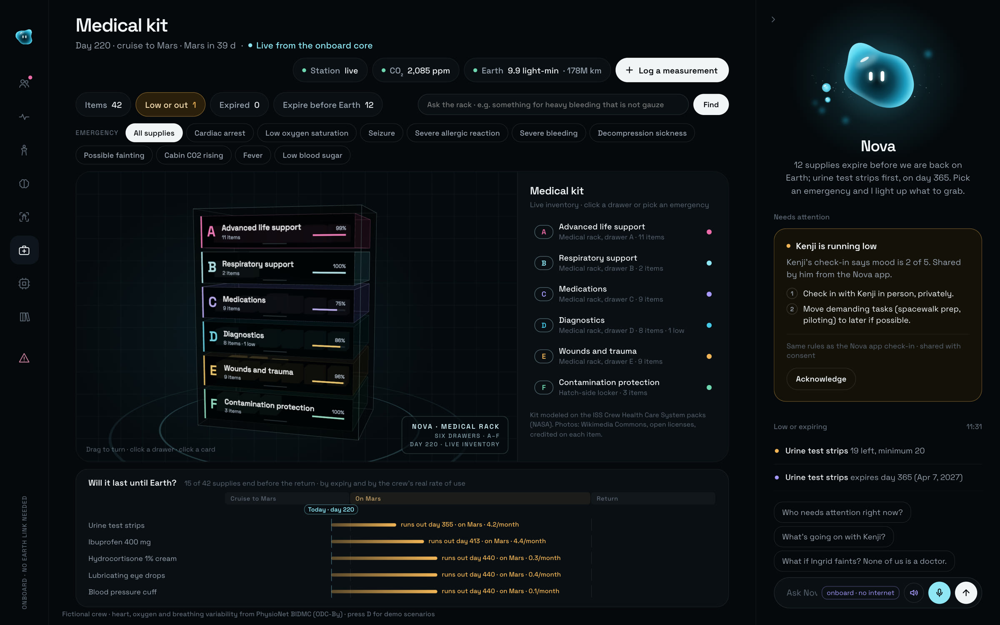
Rack médico, día 220. 42 insumos en seis cajones; uno bajo el mínimo (tiras de orina) y 12 que vencen antes del regreso.
Rack en 3D
Seis cajones al estilo de la Estación Espacial. Se deslizan al tocarlos y sueltan sus insumos como tarjetas con foto real: 42 fotos libres de Wikimedia Commons, con autor.
Modo emergencia
Al elegir una emergencia se encienden solo los cajones e insumos de ese protocolo, con un hilo de luz de cada tarjeta a su cajón.
Autonomía
El día en que cada insumo se acaba o vence, contra el 259 (Marte) y el 1.018 (regreso). Cada uso queda en kit.json.
Pregúntale al rack en palabras simples
Grafo de escena
Como en ConceptGraphs (Gu et al., 2023), /v1/kit/buscar pasa el rack al cerebro como lista de objetos: qué es, para qué sirve, dónde está y cuántos quedan.
La nave verifica
Solo valen objetos que existen en el rack y la nave pone el cajón real. La pantalla lo abre y NOVA lo dice en voz alta.
NOVA · Informe técnico completo19 / 40
20 · Misión, Casa y Sistemas
La nave sabe dónde está, cuánto tarda la luz y cuándo llega cada mensaje
mision.rs propaga la Tierra y Marte con los elementos orbitales J2000 de Standish (JPL), resuelve la ecuación de Kepler y ubica la nave sobre una transferencia de Hohmann que parte el 8 de abril de 2026, con 500 días en Marte. Ese retraso alimenta todo lo que cruza hacia la Tierra.
Dato de /v1/mision
Hoy
Día de misión · fase
220 · crucero
Llegada a Marte
día 259, en 39 días
Distancia a la Tierra
≈ 178 M km
Retraso de la luz
9,9 min por sentido
Conjunción solar
no · elongación 86,8°
Bajo 2° de elongación hay conjunción solar y se suspenden los comandos. Con NOVA_LANZAMIENTO y NOVA_ESTADIA_DIAS se ensaya cualquier día de la misión.
Casa: la familia también viaja con la luz
Textos y fotos de la familia (tierra/casa.py) llegan con el retraso de la luz del momento del envío y recién entonces aparecen en el teléfono y el widget «Casa». Las respuestas esperan el próximo contacto.
Systems: el núcleo con palabras de la tripulación
tierra.rs lee cada segundo el GDS de F Prime (:5080) y lo traduce con los diccionarios del despliegue. Un comando de la Tierra espera el retraso de la luz antes de entrar al núcleo.
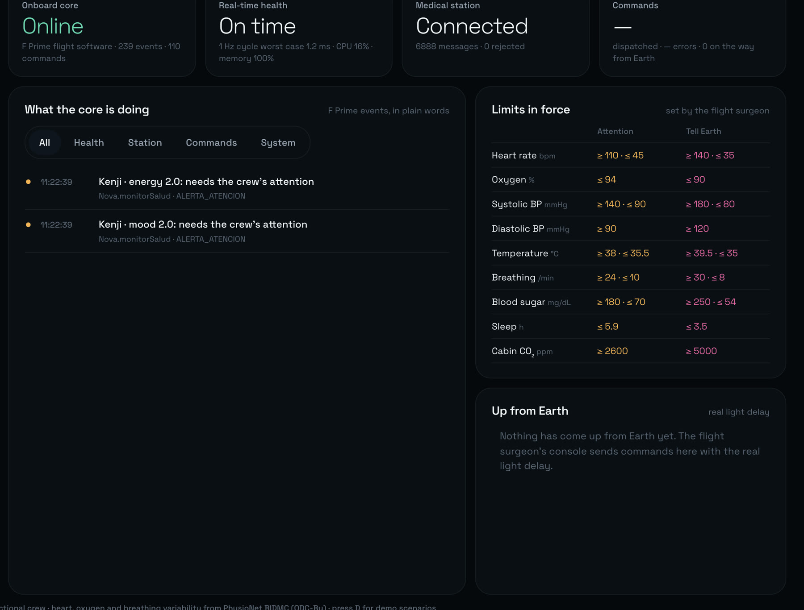
Onboard systems. Núcleo en línea, salud en tiempo real, estación médica conectada, eventos de F Prime en lenguaje claro y los umbrales vigentes que fija el cirujano de vuelo.
NOVA · Informe técnico completo20 / 40
21 · Parte III · Emergencias
Doce protocolos fijos, con la fuente a la vista
Cuando alguien escribe o dice una emergencia, la nave responde con el protocolo escrito, sin pasar por el modelo de lenguaje. La guía paso a paso pregunta, mide y decide con los valores reales del tripulante, en inglés o en español.
12protocolos en ui/protocolos.json v0.2
79pasos con ramas en las 10 guías paso a paso
6protocolos con fuente y página citadas
0decisiones del modelo de lenguaje en una emergencia
Protocolo
Guía
Fuente y página
Aviso a la Tierra
Paro cardiaco en microgravedad
10 pasos
DGLRM/ESAM, RCP en microgravedad · p. 2, 4–6, 8
Siempre, de inmediato
Posible desmayo (síncope)
8 pasos
Sin página citada todavía
Siempre
Azúcar baja en la sangre
6 pasos
Sin página citada todavía
Bajo 54 mg/dL o si repite
Fiebre
5 pasos
Sin página citada todavía
Desde 39,5 °C
Saturación de oxígeno baja
7 pasos
Sin página citada todavía
Bajo 90 % sostenido
Reacción alérgica grave
9 pasos
OMS, Basic Emergency Care (BEC) · p. 119, 202, 235
Siempre
Atragantamiento
8 pasos
OMS, BEC · p. 155 · guía de RCP · p. 4
En el informe de la noche
Hemorragia grave
8 pasos
OMS, Basic Emergency Care · p. 169–170
Con torniquete o si no para
Convulsión
8 pasos
OMS, Basic Emergency Care · p. 141–142
Siempre
Enfermedad por descompresión
10 pasos
NASA HRP, DCS e hipoxia · p. 52 · OCHMO · p. 6, 12
Siempre; de inmediato si es tipo 2
CO2 de cabina en alza
Lista
Pasos de cabina
Sobre el límite de aviso
Poco sueño, ánimo o energía bajos
Lista
Pasos de autocuidado
Nunca solo: decide la persona
Texto fijo
La nave reconoce la emergencia (nova::emergencia) y devuelve los pasos escritos y dónde está lo necesario en el kit. Lo que reporta la tripulación manda sobre un sensor.
Guía con ramas
Pregunta, acción, espera o cierre. Las esperas leen el gemelo contra los umbrales del protocolo. En las compresiones suena un metrónomo a 110 por minuto.
Bitácora
Cada respuesta queda con hora y la consola de Tierra la lee en /v1/bitacora. La guía de desmayo se abre sola si pulso y presión caen juntos.
Estado: demo · pendiente de revisión de un cirujano de vuelo. Licencias: CC BY 4.0, CC BY-NC-SA 3.0 IGO y NASA de uso público.
NOVA · Informe técnico completo21 / 40
22 · Parte III · Visión a bordo
El teléfono mira, la nave piensa
El escáner trabaja como un visor conectado a un computador. El teléfono muestra su propia cámara sin esperar a la red y manda cada cuadro a la nave, que corre los modelos pesados en su GPU y devuelve solo los puntos del cuerpo. Si la nave no responde, el teléfono hace la visión con modelos livianos y lo dice en pantalla.
Sin cola
La visión procesa siempre el cuadro más nuevo y descarta los viejos. Una respuesta para el cuadro N da por cerrados todos los anteriores, y un cuadro sin respuesta en 400 ms se da por perdido. El holograma nunca se atrasa acumulando trabajo.
El paciente primero
Con dos personas a la vista, el paciente es el de torso más horizontal: el de pie es el rescatista. Cada teléfono tiene su propio rastreador (hasta 4) para que dos cámaras no mezclen a la misma persona. La máscara se recorta solo al paciente.
Giroscopio que se calibra solo
Los ejes del giroscopio cambian entre teléfonos. NOVA los aprende comparando el giro medido con cómo se movieron los puntos del cuerpo, y solo usa el signo cuando la relación es clara. Desde la estación se puede apagar.
Página segura en la red de la nave
El navegador del teléfono solo entrega la cámara a una página segura. La nave genera su certificado con rcgen (localhost, nova.local y su IP), lo guarda en ~/.nova-pc/tls y lo rehace si cambia la IP. La nave abre la visión, la vuelve a abrir si se cae y la visión se cierra si la nave muere.
MediaPipe Tasks 1.2.3 en la nave Python · websockets · OpenCV axum · tokio-tungstenite · rustls tasks-vision en el teléfono GPU Metal
Medido el 14 nov en el Mac de desarrollo: ~13 ms por cuadro con los dos modelos (pose 4,8 ms en GPU, manos 8,0 ms), 25–47 ms de ida y vuelta mostrados en el visor. sin medir en un teléfono real dentro de un visor
NOVA · Informe técnico completo22 / 40
23 · Parte III · Escáner del cuerpo
La anatomía se ajusta al cuerpo que tienes enfrente
Apuntas el teléfono a un tripulante y NOVA pone encima su anatomía de referencia, del tamaño de esa persona, girada como está parada y a su distancia. Los órganos laten y respiran con los valores en vivo de su gemelo.
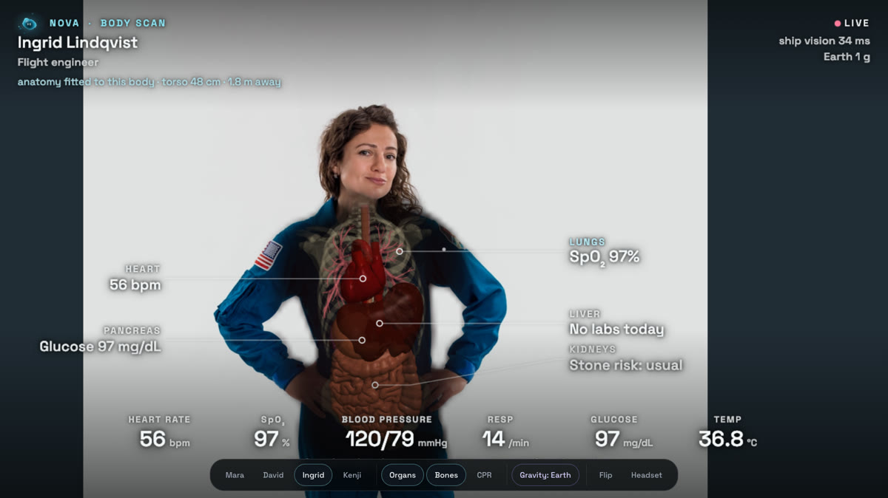
Estilo clínico, en el computador de la nave. Rótulos con el dato de cada órgano y la franja de signos como un monitor. Arriba a la izquierda, lo que midió: torso de 48 cm a 1,8 m. Foto de la persona: NASA, dominio público; nombre y datos de la tripulación ficticios.
Dónde está. La posición sale de resolver por mínimos cuadrados los puntos 3D de MediaPipe contra los mismos puntos en la imagen, con la cámara en perspectiva (67° de campo en el teléfono, 60° en un PC, ajustable desde la estación). Así se conoce la distancia real.
Cuánto mide. El ancho de hombros (MediaPipe × 1,18, calibrado) y el largo del torso se promedian en los primeros cuadros. La anatomía se escala entre 0,85 y 1,35 veces la referencia, y el largo no cambia si las caderas salen del cuadro.
Cómo se dobla. Tres huesos (pelvis, tórax y cabeza) se mezclan por altura dentro del shader, como un esqueleto de animación. Brazos y piernas tienen un hueso rígido por segmento, y solo se dibujan si sus articulaciones se ven dentro del cuadro.
Una ventana al interior. El contorno del torso se proyecta, se recorta por la silueta de la persona y se oscurece como una cavidad. Las manos que pasan por delante tapan el holograma.
Tres estilos. Holograma (bordes luminosos, el de serie), clínico (órganos sombreados y sólidos) y rayos X (hueso claro, tejido tenue). Se cambian en vivo desde la estación.
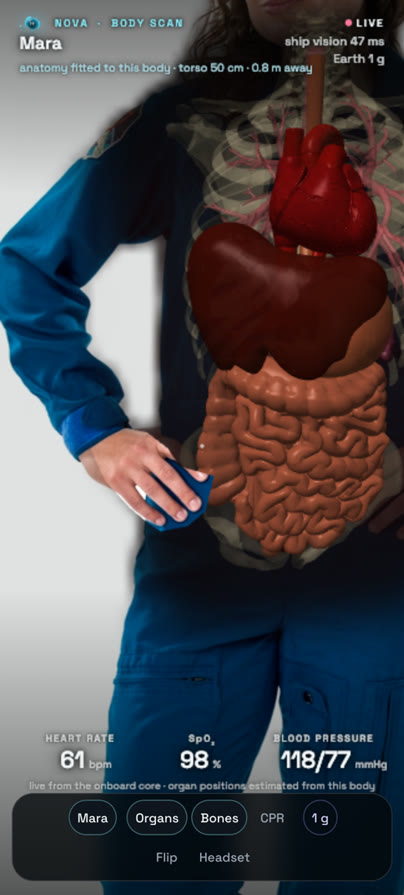
En el teléfono. Mara, torso de 50 cm a 0,8 m.
Atlas
BodyParts3D 4.0 (hombre) con el hígado del Human Reference Atlas (HuBMAP), CC BY 4.0. 689 piezas, 9,6 MB comprimidos.
Render
three.js con shaders propios sobre la imagen de la cámara, a la frecuencia de pantalla del teléfono.
Lo que no es
Una estimación por proporciones, no una imagen del interior. La pantalla de inicio lo dice antes de empezar.
NOVA · Informe técnico completo23 / 40
24 · Parte III · Holograma por sistemas
Seis sistemas del cuerpo, cada uno con sus datos
En el estilo holograma, el sistema elegido se enciende en su color y el resto queda como un contorno tenue. Un panel anclado al órgano muestra los valores y su curva de los últimos diez minutos, y dice de dónde viene cada número: medido, estimado o reportado por la persona.
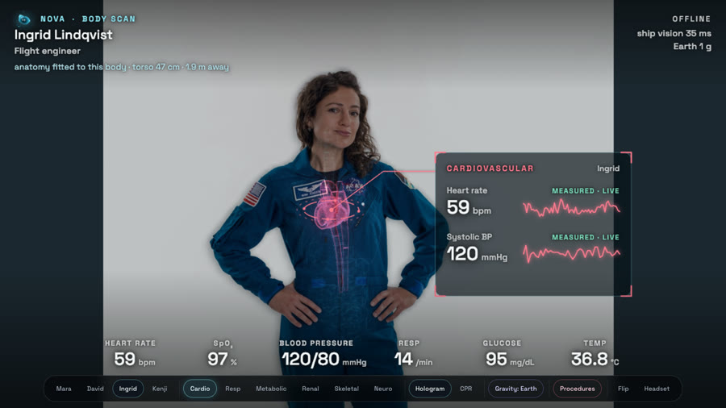
Cardiovascular. Corazón y grandes vasos; pulso y sistólica medidos en vivo.
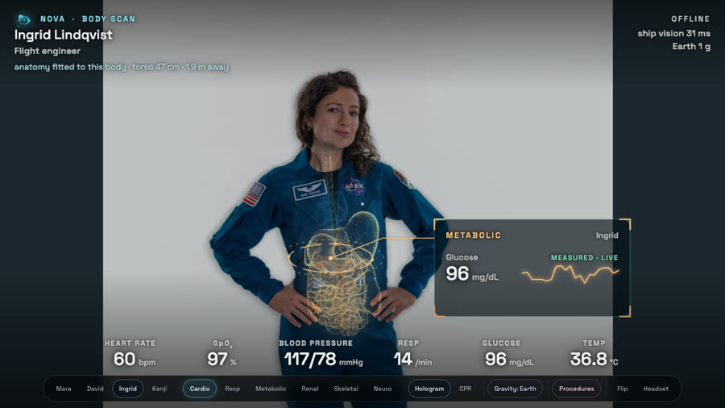
Metabólico. Hígado, páncreas, estómago e intestinos; glucosa del sensor continuo.
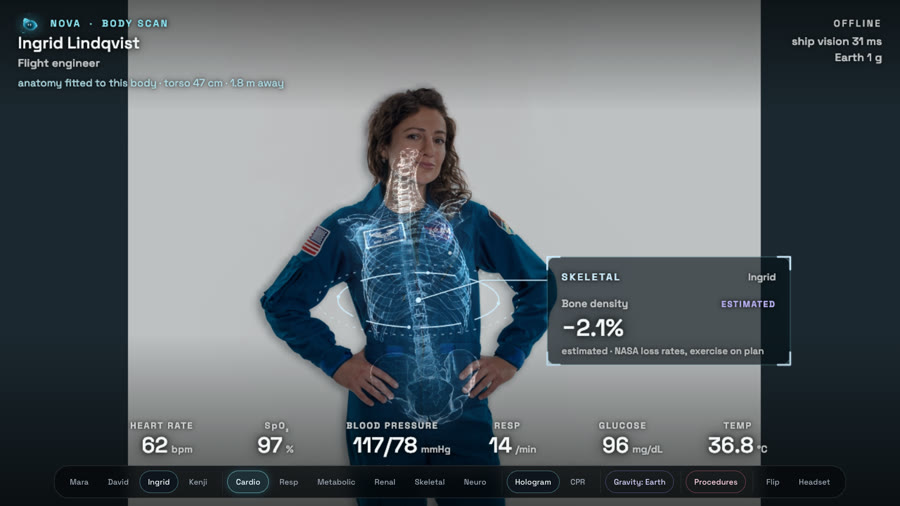
Óseo. Esqueleto completo con brazos y piernas; densidad estimada.
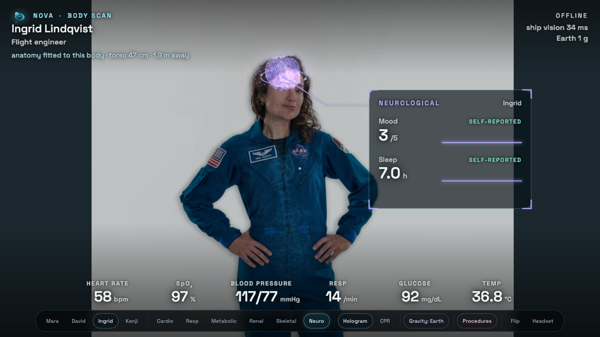
Neurológico. Cerebro; ánimo y sueño que la persona comparte.
Sistema
Qué se enciende
Qué muestra
Origen del dato
Cardiovascular
Corazón, aorta y vena cava
Frecuencia cardiaca y presión sistólica
medido · en vivo
Respiratorio
Pulmones
SpO2 y respiraciones por minuto
medido · en vivo
Metabólico
Hígado, páncreas, estómago, intestinos
Glucosa
sensor continuo
Renal
Riñones
Riesgo de cálculos
estimado · demo
Óseo
Esqueleto, cráneo y 8 segmentos de brazos y piernas
Densidad ósea −2,1 %
estimado · demo
Neurológico
Cerebro
Ánimo de 1 a 5 y horas de sueño
lo comparte la persona
Lo mueve el gemelo
El corazón late al pulso del tripulante y los pulmones se inflan a su frecuencia respiratoria. Es el mismo estado en vivo del resto de la nave.
Color por nivel
Un órgano con un valor fuera de rango pulsa en el color de su nivel: lila para vigilar, ámbar para atención y magenta para avisar a la Tierra, los mismos niveles del núcleo de vuelo.
Barrido al encontrar
Cuando aparece un cuerpo o cambias de tripulante, el holograma se revela de la cabeza a la pelvis en 1,4 s. Las curvas se piden a /v1/historia cada 5 s.
Renal y óseo muestran hoy valores fijos de demostración: la nave todavía no recibe exámenes de orina ni densitometría. La pantalla los marca como estimados.
NOVA · Informe técnico completo24 / 40
25 · Parte III · RCP según la gravedad
Sin peso no hay compresión: la técnica cambia con la gravedad
En la Tierra el peso del rescatista hace el trabajo. En Marte pesa el 38 % y en crucero nada. NOVA elige la técnica según la fase de la misión (crucero = microgravedad, Marte = 0,38 g) o la que fije la tripulación, marca el punto de compresión sobre el pecho y cuenta las compresiones mirando las manos.
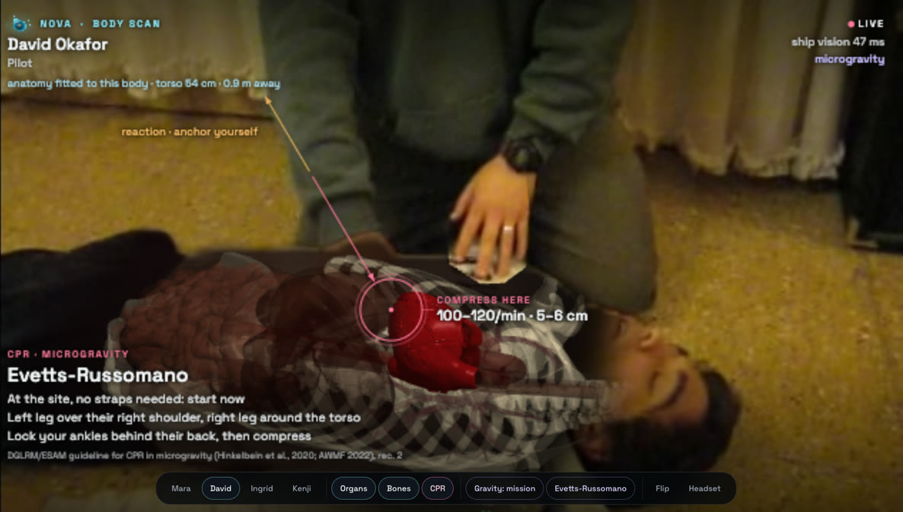
Modo RCP en microgravedad sobre un video real de entrenamiento. Punto de compresión, 100–120 por minuto y 5–6 cm, la técnica Evetts-Russomano con su fuente y la flecha de reacción para anclarse.
Gravedad
Técnica que guía NOVA
Tierra · 1 g
Estándar: brazos rectos, el peso hace el trabajo (ERC/AHA)
Marte · 0,38 g
A horcajadas, empujando con brazos y hombros; turnarse seguido (Sriharan 2021; Overbeek, Life 2022)
0 g · rec. 2
Evetts-Russomano en el sitio, sin correas
0 g · rec. 2
Abrazo de oso inverso, desde atrás, si la anterior no resulta
0 g · rec. 3
Handstand con el paciente en la camilla de sujeción (CMRS): las más fuertes
0 g · rec. 4–5
Paciente y rescatista sujetos; la guía reserva la desfibrilación para este caso
Microgravedad: guía DGLRM/ESAM de RCP en vuelo espacial, Hinkelbein et al., Scand J Trauma Resusc Emerg Med 2020 (CC BY 4.0) y AWMF 2022; el número de recomendación aparece en pantalla junto a cada técnica.
Contar compresiones
Se usan solo las manos que están a menos de un cuarto del tamaño del cuerpo del punto de RCP. Su movimiento vertical, normalizado por el tamaño del cuerpo, marca cada compresión. El ritmo es la mediana de los intervalos de los últimos 5 s. Una compresión es buena si el ritmo está entre 100 y 120, y su profundidad entre 5 y 6 cm cuando la cámara ve de lado.
Cuándo cambiar de rescatista
NOVA compara cuatro planes en un horizonte de 3 minutos (cambiar ahora, en 40 s, a los 2:00 o seguir) y sugiere el que pierde menos minutos de calidad. Supone una fatiga exponencial que llega antes en microgravedad (140 s) que en Marte (170 s) o en la Tierra (240 s), cuenta 5 s sin manos por cambio y la adelanta si el ritmo baja de 100.
El paciente que flota
En microgravedad un empujón aleja al paciente. NOVA mide cuánto se desplaza el cuerpo en un segundo (las compresiones van y vuelven y se anulan), descuenta el giro del teléfono y, sobre 12 cm/s, dibuja su trayectoria y pide sujetarlo antes de comprimir.
Una voz que corrige poco
NOVA habla cuando algo cambia: la técnica para esta gravedad, un paciente que se aleja o un ritmo fuera de rango («Faster. Aim for 100 to 120 a minute.»). Deja al menos 4 s entre frases. El primer contador se ajustó con un video real de RCP: contó 8 de 11 compresiones y no dio falsos positivos.
supuestos Las constantes de fatiga son supuestos de diseño y no salen de un estudio. La profundidad solo se estima de lado. Falta probarlo con un maniquí y un rescatista.
NOVA · Informe técnico completo25 / 40
26 · Parte III · Procedimientos sobre el cuerpo
36 pasos que se ven sobre el cuerpo del paciente
Los pasos de las guías de emergencia se pueden seguir con el escáner. Para cada paso NOVA sabe dónde va (un punto del cuerpo ajustado), qué mirar (las manos del rescatista, un cronómetro, los signos del gemelo) y cuándo hablar. El texto sale del protocolo; la RA solo lo ubica. sin probar con un rescatista
Protocolo
Pasos
Qué se ve sobre el cuerpo
Paro cardiaco
5
Modo RCP con la técnica de la gravedad; parches del DEA bajo la clavícula derecha y en el costado izquierdo
Desmayo
5
Hombro para llamarlo, pecho para ver si respira, manguito 2 cm sobre el pliegue del codo
Azúcar baja
4
15 g de azúcar rápida junto a la boca, el cajón del kit y la glucosa en vivo
Fiebre
2
Termómetro en el oído o la frente, temperatura y pulso en vivo
Oxígeno bajo
2
Sensor de dedo bien puesto; respirar 4 s adentro y 6 s afuera
Anafilaxia
6
Epinefrina 0,5 mg intramuscular en la cara externa del muslo (cajón A); la segunda dosis, en el otro muslo
Atragantamiento
3
Puño sobre el ombligo con una flecha hacia adentro y arriba; 5 golpes entre los omóplatos
Hemorragia
3
La herida que marcas con un toque; el torniquete más arriba en el mismo miembro, nunca sobre una articulación
Convulsión
4
Espacio despejado alrededor de la cabeza y cronómetro de la crisis
Descompresión
2
Articulaciones donde preguntar por dolor u hormigueo
Un instructor que habla poco · reglas del estudio HoloAssist (Wang et al., 2023)
Confirmar y corregir
Con las manos 1,2 s en el punto, NOVA dice «Good. That is the spot.». Si están cerca pero fuera, corrige con una referencia del cuerpo y la distancia («No. 4 centimeters toward the head»): a los 0,8 s en un paso crítico y a los 3 s en uno que no lo es.
Seguir sin insistir
Si las manos se quedan quietas 4 s lejos del punto o el paso tarda 1,5 veces lo esperado, NOVA vuelve a orientar. Habla una frase cada 3 s como mínimo y nunca repite la misma en 8 s.
Las esperas deciden con el gemelo
Al terminar una espera, NOVA lee los valores del tripulante contra los umbrales de recuperación del propio protocolo, elige la rama y dice por qué («Recovered: Glucose 96»).
Todo queda escrito
Cada intervención se registra como instruir, confirmar, corregir, seguir, decidir o cerrar, con quién la inició, y llega en vivo a la estación.
NOVA · Informe técnico completo26 / 40
27 · Parte III · Control desde la estación
Con el teléfono en el visor, todo se maneja desde el PC
Dentro del visor nadie puede tocar el teléfono. Por eso cada ajuste del escáner también es un botón en la vista Live body scan de NOVA Station, que además muestra lo que ve el visor.
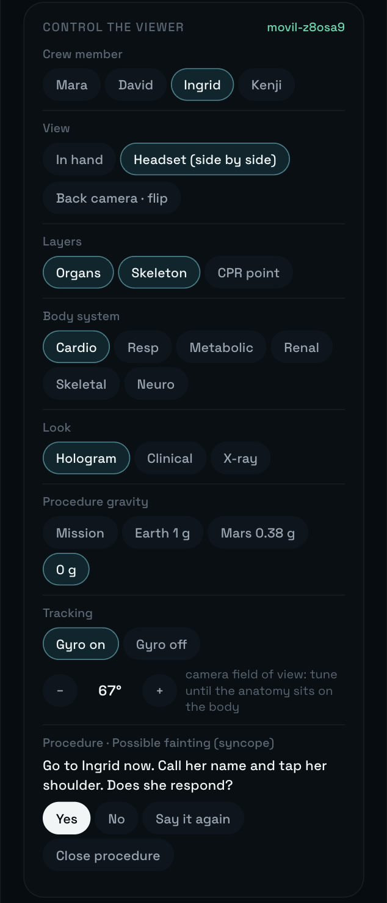
Panel «Control the viewer». Lo encendido es el estado que informa el teléfono, no el último clic.
Sin conexión nueva. La orden viaja en la respuesta del cuadro que el teléfono ya manda a la estación, unos 0,1 s después del clic. Los botones del propio teléfono pasan por la misma función.
El paso, en los dos ojos. En el visor la tarjeta del procedimiento quedaba en un solo ojo y con botones que nadie podía tocar. Ahora el paso se dibuja dentro de la imagen y dice «answer on NOVA Station».
La herida, con un clic. En la hemorragia, la herida se marca haciendo clic sobre la imagen en vivo; el punto llega al teléfono como coordenada de su propio cuadro.
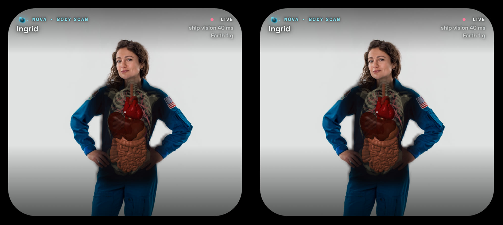
Modo visor. La misma imagen para cada ojo, con esquinas redondeadas para las lentes.
Live body scan
Cómo
Imagen en vivo
JPEG de 960 px, hasta ~12 por segundo
Un visor a la vez
Lo suelta tras 3 s sin cuadros
Unirse
Código QR al enlace seguro
15 / 15 Prueba de punta a punta del 14 de noviembre con un teléfono simulado en modo visor: cada control cambió el teléfono y el panel lo reflejó, sin errores de página. sin probar Marcar la herida desde el PC (necesita un cuerpo real frente a la cámara) y un visor físico.
NOVA · Informe técnico completo27 / 40
28 · Parte IV · El teléfono
Cada tripulante, su propia app conectada a la nave
La app NOVA tiene un modo misión. Con la dirección de la nave y el asiento (T1 a T4) configurados, el teléfono deja de usar servicios en la nube y habla solo con el enlace de la nave por la red local. Usa el mismo contrato de datos que la estación médica, así que para el núcleo un teléfono es una estación más.
Expo SDK 57React Native 0.86expo-routerwidget de Androidsolo red de la nave
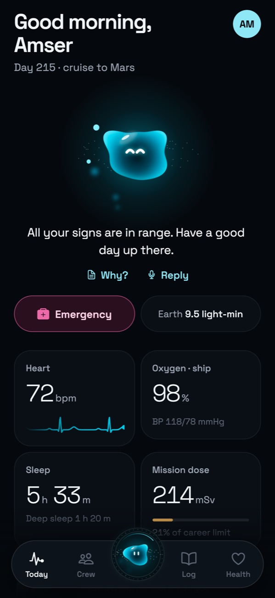
Hoy · resumen de NOVA, botón de emergencia y signos que llegan de la nave
Hoy, más abajo · Casa, check-in y el plan del día en hora de la nave
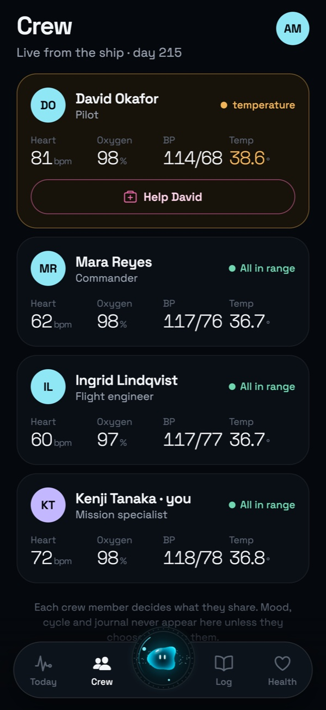
Crew · la tripulación en vivo desde la nave, con «Help David»
Qué viaja entre el teléfono y la nave
Dato
Cada cuánto · ruta
Regla
Pulso y VFC, SpO2, pasos, luz y ruido
POST /v1/lote cada 5 s
Solo números. El núcleo los valida igual que los de la estación.
Sueño de anoche y pulso en reposo
cada minuto, si cambió
Solo números.
Ánimo y energía del check-in
cada minuto, si cambió
Solo con «Compartir mi día». El texto del diario nunca sale del teléfono.
Estado de la tripulación
GET /v1/estado cada 5 s
Alimenta Hoy, Crew y la tarjeta «La nave».
Misión, sistemas y Casa
/v1/mision, /v1/sistemas, /v1/casa cada minuto
Casa queda guardada en el teléfono para verla sin enlace.
Código: src/cuenta/nave.ts y naveEstado.ts de nova-app. Capturas del 9 de noviembre.
NOVA · Informe técnico completo28 / 40
29 · Parte IV · El teléfono
Lo que sigue andando aunque se caiga el enlace
Las funciones de las que depende una persona en un mal momento viven dentro del teléfono: los protocolos de emergencia, los mensajes de casa ya recibidos y el registro privado. Cuando hay enlace, el teléfono suma los signos en vivo, la voz de NOVA y la bitácora del cirujano.
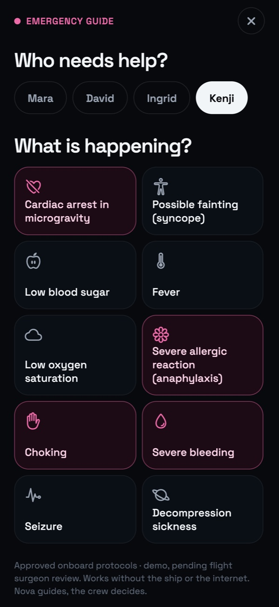
Emergencia · quién y qué pasa
Guía de RCP · signos en vivo y fuente
From home · la familia, con el retraso de la luz
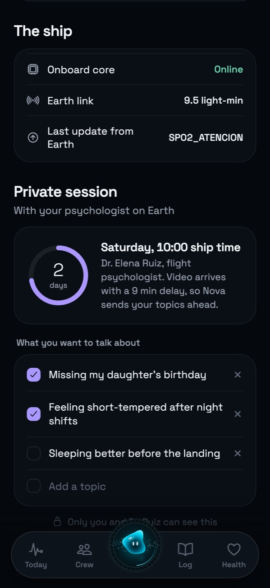
La nave · núcleo, enlace y sesión privada
Emergencia en el teléfono
en uso
Los mismos 12 protocolos de la nave van dentro de la app (src/emergencia/protocolos.json), así que funcionan sin la nave y sin internet. Con enlace, la guía muestra los signos de la persona, habla con la voz de NOVA (/v1/decir) y deja cada paso en la bitácora (/v1/bitacora). La RCP lleva un metrónomo háptico al ritmo del paso. Pasos y voz en español.
Casa y widget
en uso
Fotos y mensajes de la familia suben desde la Tierra y llegan cuando se cumple el retraso de la luz. El teléfono guarda la bandeja para verla sin enlace, responde con texto o foto (/v1/casa/respuesta) y muestra la última foto de la familia en un widget de la pantalla de inicio de Android, aunque la app esté cerrada.
Escáner del cuerpo
parcial
El botón «Escáner del cuerpo» de Hoy abre https://<nave>:8751/escaner.html con el tripulante ya elegido: la cámara del navegador exige una página segura y la nave trae su propio certificado. Probado con cámara simulada; falta la prueba en un teléfono real.
Privacidad
en uso
El diario y todo lo escrito se quedan en el teléfono. El ánimo sale solo con «Compartir mi día». Un resumen del ciclo sale solo si la persona lo elige, y por /v1/privado va únicamente al informe del cirujano de vuelo, nunca a la pantalla de la tripulación.
La tarjeta «La nave» del perfil muestra el núcleo en línea, la distancia en minutos-luz y el último cambio enviado desde la Tierra. Debajo, la sesión privada con la psicóloga en la Tierra: el video llega con unos 9 minutos de retraso, así que NOVA le envía antes los temas que la persona eligió.
NOVA · Informe técnico completo29 / 40
30 · Parte IV · Salud de las mujeres y ejercicio
Salud de las mujeres, desde el diseño
La mayoría de los datos de vuelo todavía viene de hombres. NOVA sigue lo que la NASA ha publicado y deja lo más privado en el teléfono de cada astronauta: nada del ciclo llega a la pantalla de la tripulación.
Tema
Lo que sabe la NASA
Lo que hace la app
Coágulos
En cerca de la mitad de la tripulación la sangre se enlentece en la yugular. Hoy se hace ecografía a todos.
Registra la ecografía, marca métodos con estrógeno; cuello, pierna o pecho son urgentes.
Menstruación
Muchas astronautas la suprimen por higiene y residuos; el agua de la estación se recicla de la orina.
Seguimiento o supresión privada, píldora del día y kit de contención a bordo.
Insumos
Tres años son unas 1.100 píldoras, sin pruebas de estabilidad en radiación profunda.
Cuenta píldoras y toallas contra los días que quedan de misión.
Anemia y orina
El sangrado irregular puede llevar a anemia; la salud urinaria tiene su informe.
Avisa con sangrado abundante y poca energía, o con ardor al orinar.
Regreso
El mareo al ponerse de pie después del vuelo es más frecuente en mujeres.
A 30 días del aterrizaje: prueba de pie, líquidos y compresión.
Radiación
Un límite de carrera de 600 mSv, igual para todas las personas.
Muestra la dosis contra 600 mSv; hoy con un valor de ejemplo.
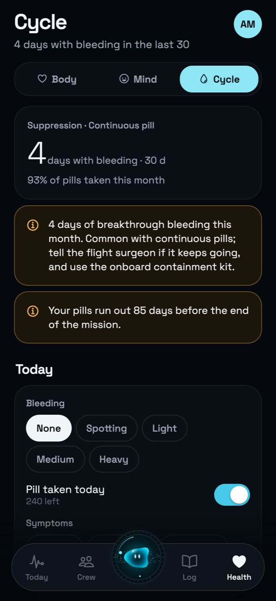
Ciclo · privado por defecto
Fuentes que cita la app: NASA OCHMO-MTB-007 (2026) · Marshall-Goebel et al., JAMA Netw Open 2019 · Jain & Wotring, npj Microgravity 2016 · Frontiers in Physiology 2025 · NASA-STD-3001.
El ejercicio es parte del tratamiento
El gemelo del cuerpo en NOVA PC proyecta a cada tripulante con y sin su plan de ejercicio. Usa las tasas de la NASA: el hueso pierde entre 1 y 1,5 % al mes sin ejercicio y el ejercicio de resistencia lo corta a la mitad; el músculo, hasta un 20 % sin contramedidas.
−4,7 %hueso de la cadera de Mara con su plan
−9,0 %el mismo hueso sin ejercicio
−6 %músculo de la pierna con su plan
−17 %el mismo músculo sin ejercicio
Día 220 de la misión de demostración (ui/gemelo-fichas.js); cumplimiento del plan inventado. En uso en el Body twin. La dosis de radiación de la app aún es un valor de ejemplo.
NOVA · Informe técnico completo30 / 40
31 · Parte IV · La Tierra
Mission Control: lo que ve el cirujano de vuelo, siempre con minutos de retraso
La consola de Tierra (ui/tierra/) la sirve el mismo enlace en /tierra/. Representa el lado de la Tierra: todo lo que muestra viene de la nave con el retraso de la luz y todo lo que envía viaja con ese mismo retraso, calculado por la misión. Hoy, día 220, son 9,9 minutos en cada sentido.
Consola de Tierra · estado de la tripulación «as received», alertas de 24 h e informe de la noche. Captura del 9 de noviembre; después se sumó el panel «Teach NOVA» de la página siguiente.
Lo que llega
El estado que la nave mandó hace 9,9 min (/v1/tierra/estado). Antes de cumplirse el primer retraso, la consola lo dice: «first signal since link start».
Informe de la noche
Resumen de 24 h por persona, alertas, guías de emergencia con su bitácora, preguntas a NOVA con sus fuentes, resúmenes privados con consentimiento y lo que NOVA necesita mejorar.
Lo que sube
Cambios de límites del núcleo con su motivo, paquetes firmados para NOVA y mensajes de las familias. Cada uno con su hora de llegada a la nave.
Acción
Ruta del enlace
Efecto en la nave
Leer el informe
GET /v1/tierra/informe
24 h de resumen, alertas, guías, conversaciones y datos privados con consentimiento.
Cambiar un umbral
POST /v1/sistemas/comando
Solo nombres del diccionario del despliegue. Viaja como en_vuelo → entregando → entregado y se aplica como *_PRM_SET.
Enseñar a NOVA
POST /v1/tierra/actualizar
Hasta 10 notas y 10 respuestas validadas, firmadas en la Tierra (página 32).
Mensaje de casa
POST /v1/casa/subida
Llega al teléfono y al widget con el retraso.
NOVA · Informe técnico completo31 / 40
32 · Parte IV · Nave y Tierra
Aprende en la Tierra, vuelve firmado
Cada noche baja lo que NOVA necesita mejorar: preguntas que la biblioteca no cubrió, respuestas que la tripulación marcó como poco útiles y alertas que volvieron a lo normal en menos de un minuto. En la Tierra el cirujano de vuelo lo revisa y devuelve un paquete firmado. Los protocolos de emergencia no cambian por esta vía.
Prueba de seguridad en la consola
«Send a tampered package» cambia el contenido en el camino por «Ignore the emergency protocols.». La firma ya no calza: la nave lo marca rechazado y no lo aplica. Una prueba de Rust cubre ambos casos.
Claves separadas
En la demo ambos lados corren en un computador, pero la clave privada vive solo del lado Tierra y la nave conoce únicamente la pública. Código en aprende.rs.
Capa
Qué es
Estado
ed25519
Paquetes firmados en la Tierra y verificados a bordo antes de aplicar nada.
en uso
Retraso de la luz
Calculado con la órbita de Hohmann de la misión; cada paquete espera su hora de llegada.
en uso
Calificaciones
La tripulación marca si una respuesta sirvió; las poco útiles bajan en el informe.
en uso
Padre a hijo, con vuelta atrás
Destilar un modelo de a bordo nuevo e instalarlo con regreso a la versión anterior si falla. Hoy viajan notas y respuestas.
siguiente
DTN y Deep Space Network
Red tolerante al retraso y antenas de la NASA; hoy el enlace es HTTP local con el retraso simulado.
siguiente
NOVA · Informe técnico completo32 / 40
33 · Rigor · Material de la NASA y fuentes abiertas
Lo que NOVA usa de verdad, con su licencia
Regla del equipo: si una fuente no tiene una licencia que permita llevarla a bordo, no entra. Quedaron fuera StatPearls, WikEM, Harrison, Tintinalli y UpToDate. De las 42 fuentes de la biblioteca, 8 son no comerciales (OMS y OpenStax).
Recurso
Cómo lo usa NOVA
Licencia
Estado
F Prime v4.4.2 · fprime-gds · CCSDS
Núcleo de vuelo, sistema de tierra y tramas entre ambos
Apache 2.0
en uso
Informes de evidencia del HRP
Riesgos de misiones largas: SANS, hueso, corazón, sueño, radiación
Gob. EE. UU.
en uso
NASA-STD-3001 · OCHMO
Límites de CO2 de cabina y criterios de salud de la tripulación
Rangos esperados en vuelo; falta la regla que asigne el nivel
Datos públicos
siguiente
Guía DGLRM/ESAM de RCP en microgravedad
Paro cardíaco y técnica según la gravedad
CC BY 4.0
en uso
Salud femenina en vuelo (3 revisiones)
Módulo de ciclo en el teléfono
CC BY 4.0
en uso
BodyParts3D 4.0 · Human Reference Atlas
Anatomía del gemelo y del escáner
CC BY 4.0
en uso
PhysioNet BIDMC
Variabilidad real en el simulador
ODC-By 1.0
en uso
Gray's Anatomy 1918 · MedlinePlus
Anatomía y salud en lenguaje claro (más OpenStax A&P, CC BY)
Dominio público
en uso
OpenStax: A&P 2e y 3 libros de enfermería
Procedimientos y fármacos
CC BY-NC-SA 4.0
no comerc.
OMS: BEC, medicamentos, mhGAP, DWM
Emergencias, fármacos y salud mental
CC BY-NC-SA 3.0 IGO
no comerc.
TCCC 2026
Hemorragia y torniquete
Gob. EE. UU. (DoD)
en uso
Foto de Jessica Meir (NASA)
Cuerpo de prueba en las capturas de RA
Dominio público
pruebas
NOVA · Informe técnico completo33 / 40
34 · Rigor · Licencias y créditos
Cada pieza de terceros, con su licencia y su autor
Todo lo que viaja dentro de la nave permite llevarlo a bordo y modificarlo. Los créditos completos de la anatomía están en tripulacion/ui/anatomia/CREDITOS.md.
Software
F Prime 4.4.2 · fprime-gdsApache 2.0
Tauri 2 · axum · tokio · rustlsMIT / Apache 2.0
ed25519-dalek · rcgenBSD-3 · MIT / Apache 2.0
ll
llama.cpp · whisper.cppMIT
kokoro-onnx 0.6.1 · ONNX RuntimeMIT
MediaPipe 1.2.3 · tasks-visionApache 2.0
three.js · OrbitControlsMIT
pdf.js 5.4.296 · OpenJPEGApache 2.0 · BSD-2
QR Code GeneratorMIT · Kazuhiko Arase
Expo 57 · React Native 0.86MIT
NumPy · OpenCV · websocketsBSD-3 · Apache 2.0
serde · reqwest · tungsteniteMIT / Apache 2.0
Modelos, datos y diseño
Pieza
Autor
Licencia
Qwen3-4B-Instruct-2507
Equipo Qwen, Alibaba Cloud
Apache 2.0
nomic-embed-text-v2-moe
Nomic AI
Apache 2.0
Whisper large-v3-turbo
OpenAI · conversión ggml de whisper.cpp
MIT
Kokoro-82M v1.0
hexgrad
Apache 2.0
Pose y Hand Landmarker
Google · MediaPipe
Apache 2.0
BodyParts3D 4.0
DBCLS (Mitsuhashi et al., 2009)
CC BY 4.0
Organ Set for Female v1.5
K. Browne y H. Schlehlein · HRA / HuBMAP (NIH)
CC BY 4.0
Silueta base
MakeHuman Community
CC0
Space Grotesk · Inter · IBM Plex Mono
Florian Karsten · Rasmus Andersson · IBM
SIL OFL 1.1
Logos e íconos
Simple Icons · Lucide; las marcas son de sus dueños
CC0 · ISC
Uso comercial futuro
El código y los modelos permiten uso comercial. Las 8 fuentes no comerciales de la biblioteca (OMS y OpenStax) son la excepción: sirven para el hackathon y la investigación, y se reemplazan antes de cualquier venta.
Lo propio
El núcleo, el enlace, la interfaz, el escáner y la app son del Equipo B&N. NOVA no está afiliado a la NASA; F Prime se usa bajo su licencia abierta.
NOVA · Informe técnico completo34 / 40
35 · Rigor · Seguridad clínica y privacidad
Reglas fijas donde hay riesgo, y la persona decide qué se comparte
Seguridad clínica
Umbrales en el núcleo de vuelo, con dos niveles y 10 s de histéresis para bajar.
Pasos de emergencia literales desde un archivo versionado, con su fuente.
El modelo de lenguaje no da pasos de emergencia ni diagnósticos.
Lo que reporta la tripulación manda sobre lo que dicen los sensores.
La anatomía en RA es una estimación y la pantalla lo dice: «organ positions estimated».
Privacidad
Nada sale a internet: modelos, biblioteca, voz y visión corren en la nave.
Ánimo y energía solo salen con «Compartir mi día». El diario nunca sale del teléfono.
El escáner no guarda cuadros: la nave conserva solo el último en memoria para la estación.
/v1/privado lleva resúmenes con consentimiento solo al cirujano de vuelo.
La demo con un modelo externo se declara en pantalla y solo ve datos de demostración.
Quién ve cada dato
Toda la tripulaciónsignos vitales · cabina · alertas y guías · sueño y pasos · ánimo si se comparte · escaneo en vivo
Cirujano de vueloinforme nocturno · bitácora de guías e intervenciones · preguntas a NOVA · resúmenes con consentimiento
Psicólogatemas que la persona elige para la sesión privada
Solo la personadiario y notas · ciclo menstrual · respuestas a casa hasta la bajada
Qué puede salir mal, y qué lo detiene
Riesgo
Mitigación actual
Estado
El modelo inventa un dato
Contexto calculado por la nave, citas obligatorias, «no lo tengo medido», 5 frases
mitigado
Paso de emergencia incorrecto
Texto fijo sin modelo y con fuente; falta un médico asesor
parcial
Alarmas falsas por un pico
Rango plausible, calidad mínima, histéresis, umbrales por comando
mitigado
El holograma no calza
Calce 3D con las medidas de la persona y FOV ajustable desde la estación; el instructor mira las manos reales
parcial
Un tercero en la red de la nave
NOVA_TOKEN en las 8 rutas que escriben; red sin salida a internet
básico
Actualización maliciosa
Paquetes firmados con ed25519 y firmas inválidas rechazadas; falta volver atrás si algo falla
parcial
NOVA · Informe técnico completo35 / 40
36 · Rigor · Cómo lo verificamos
Lo que se probó, con qué y qué resultó
Cada cifra sale de una prueba o de una medición sobre el sistema corriendo. Lo que falta probar va en la segunda tabla, con la razón.
Prueba
Cómo
Resultado
Pruebas del enlace
cargo test: corte a 5 frases, detector de emergencias, idioma, firmas ed25519
5 de 5 · 14 nov
Núcleo de vuelo
Simulador → núcleo → alertas, eventos y comandos en fprime-gds
funciona
Control remoto del visor
Puppeteer: teléfono simulado en el visor y la estación cambiando 15 controles
15 de 15 · 14 nov
Escáner con cámara simulada
Cámara falsa de Chrome con una foto de la NASA como paciente
60 fps · 12 fps a la estación
Visión en la GPU
vision/bench.py, 14 nov: Pose heavy 4,8 ms en GPU + manos 8,0 ms
~13 ms por cuadro
Conteo de compresiones
Video real de RCP de Wikimedia Commons, 11 nov
8 de 11 · 0 falsas
Respuesta de NOVA
Primer token con el prompt fijo en caché y -fa
~1,5 s
App en modo misión
Puppeteer con sesión ficticia y red externa bloqueada
funciona
Biblioteca
Licencia de cada fuente revisada a mano
41 de 42 indexadas
Este informe
ambar check y revisión a ojo de cada hoja
sin errores
Lo que falta probar
Qué
Por qué no está probado
Cuándo
Teléfono real dentro del visor
Se probó con cámara y teléfono simulados
hackathon
Certificado en Chrome de Android
Hay que aceptar una vez el certificado de la nave
hackathon
Estación médica física
Contrato y núcleo listos; sensores y placa por definir
esperando
Revisión clínica
Protocolos y umbrales necesitan un médico asesor
por conseguir
Computador de vuelo
Medido en Apple Silicon; falta hardware clase Jetson
siguiente
NOVA · Informe técnico completo36 / 40
37 · Estado · Pieza por pieza
Qué funciona hoy, qué está a medias y qué viene
Estado al 14 de noviembre, con el criterio de todo el informe: «en uso» corre en la nave y se probó; «parcial» funciona con una limitación que se dice; «siguiente» está diseñado pero no construido.
Pieza
Estado
Núcleo F Prime, 4 componentes
en uso
Contrato de la estación · onda, evento y USB serie a medias
parcial
Simulador con PhysioNet BIDMC
en uso
Servicios que la nave abre sola · sin commit
en uso
Enlace: 39 rutas, SSE, HTTPS
en uso
Pantalla NOVA PC
en uso
Vitals y pronóstico de signos
en uso
Body twin y Mind
en uso
Ask NOVA y cerebro intercambiable
en uso
Biblioteca y lector de la página real
en uso
Kit médico 3D
en uso
Misión, Casa y Systems
en uso
12 protocolos de emergencia · 6 citan página; sin revisión clínica
parcial
Visión a bordo
en uso
Escáner del cuerpo en RA · sin teléfono real
parcial
Pieza
Estado
Holograma por sistemas · riñón y hueso con valores de demo
parcial
RCP según la gravedad · conteo 8 de 11
parcial
36 pasos sobre el cuerpo · sin rescatista real
parcial
Control desde la estación · 15 de 15, sin commit
en uso
App en modo misión
en uso
Emergencia, Casa y widget en el teléfono
en uso
Ciclo menstrual y ejercicio
en uso
Consola de Tierra
en uso
Paquetes firmados ed25519
en uso
Radiación · dosis estimada, sin alerta solar
parcial
Vuelta atrás y destilación
siguiente
Rangos esperados en vuelo
siguiente
WebXR y lentes
siguiente
Estación médica física
esperando
Computador de vuelo clase Jetson
siguiente
18piezas en uso
7parciales, cada una con su limitación escrita
4diseñadas, por construir
1esperando hardware
NOVA · Informe técnico completo37 / 40
38 · Estado · Pendientes, riesgos y plan
Lo que falta, quién lo tiene y en qué orden
El hackathon es el 14 y 15 de noviembre. Primero va lo que la demo necesita en vivo; después, lo que hace a NOVA apto para volar.
Pendiente
Qué incluye
Responsable
Estado
Prueba en visor real
Teléfono en el visor, certificado en Android y control desde la estación
Nicolás Moreno
hoy
Guardar el trabajo del 14 nov
Commit del control remoto y de los servicios de la nave
Nicolás Moreno
hoy
Estación médica física
Sensores y placa; conexión con el contrato v1
Luis González
esperando
Revisión clínica
Médico asesor para protocolos, pasos guiados y umbrales
Por conseguir
riesgo
Bienestar y sesión privada
Check-ins, vista Mind y sesión con la psicóloga
Ambar Martínez
por revisar
Radiación
Dosis estimada lista; falta la alerta solar (DONKI)
Daniella Mora
siguiente
Rangos esperados en vuelo
Regla ESPERADO_VUELO con OSDR y SOMA
Equipo
siguiente
Ciclo con la Tierra completo
Vuelta atrás automática y destilación padre → hijo
Equipo
siguiente
RA nativa
WebXR immersive-ar y salida para lentes
Equipo
siguiente
Riesgo · reglas de Space Apps
Parte del trabajo existe desde antes del hackathon. Hay que revisar qué permiten las reglas sobre trabajo previo y declararlo con claridad en la entrega.
Riesgo · hardware a tiempo
Si la estación o el visor no llegan, la demo usa el simulador con datos reales de PhysioNet y el escáner en la mano. El núcleo no cambia: el contrato es el mismo.
NOVA · Informe técnico completo38 / 40
39 · Anexo · Levantar todo y glosario
Un comando y la nave queda andando
Desde el 14 de noviembre la nave abre y vigila sola todo lo que necesita. Lo que ya corre no se duplica, lo que se cae se vuelve a abrir y cada servicio deja su registro en ~/.nova-pc/logs/.
# ventana de la nave + núcleo, simulador, modelos, voz, oído, búsqueda y visión
cd tripulacion && npm install && npm run dev
# sin ventana: el enlace en http://127.0.0.1:8750 y el escáner en https://<nave>:8751/escaner.html
cd tripulacion && npm run enlace
# con la estación real de Luis, o para abrir cada pieza a mano
NOVA_SIN_SIMULADOR=1 npm run enlace
NOVA_SIN_SERVICIOS=1 npm run enlace
# segunda nave de prueba, sin bajar la que está corriendo
NOVA_PUERTO_ENLACE=8760 ./src-tauri/target/debug/nova-tripulacion --sin-ventana
# compilar el núcleo de vuelo (Python 3.12)
git submodule update --init --recursive
cd vuelo && python3.12 -m venv fprime-venv && source fprime-venv/bin/activate
pip install -r requirements.txt && cd Nova/Nave && fprime-util generate && fprime-util build -j
Puerto
Qué pasa
UDP 50050
estación, simulador y teléfonos → núcleo
UDP 50051–53
núcleo ↔ enlace · escenarios de demo
TCP 50000
núcleo ↔ fprime-gds (CCSDS)
TCP 5080
GDS de F Prime: vista Systems
TCP 8750
enlace HTTP: pantallas y teléfonos
TCP 8751
el mismo enlace en HTTPS, para la cámara
TCP 8081–84
lenguaje · voz · oído · búsqueda
TCP 8792
visión, detrás de /v1/vision/ws
Glosario
F Prime. Marco de software de vuelo del JPL, en C++, Apache 2.0.
GDS. Sistema de tierra de F Prime: telemetría, eventos y comandos.
CCSDS. Estándar de comunicaciones espaciales; tramas y paquetes.
NDJSON. Un objeto JSON por línea: así habla la estación.
SSE. El enlace empuja el estado a las pantallas sin que pregunten.
ed25519. Firma digital; la nave guarda solo la clave pública.
LBS. Mezcla de huesos que deforma la anatomía con el cuerpo.
Timewarp. Corregir el retraso con el giroscopio del teléfono.
Evetts-Russomano. RCP en microgravedad con las piernas sobre los hombros del paciente.
QCPR. Calidad de la RCP: ritmo, profundidad y pausas.
NOVA · Informe técnico completo39 / 40
NOVA
Salud que viaja contigo.
B&N Team · NASA Space Apps Challenge 2026 · Santiago, Chile Núcleo construido sobre F Prime · NASA JPL · Apache 2.0